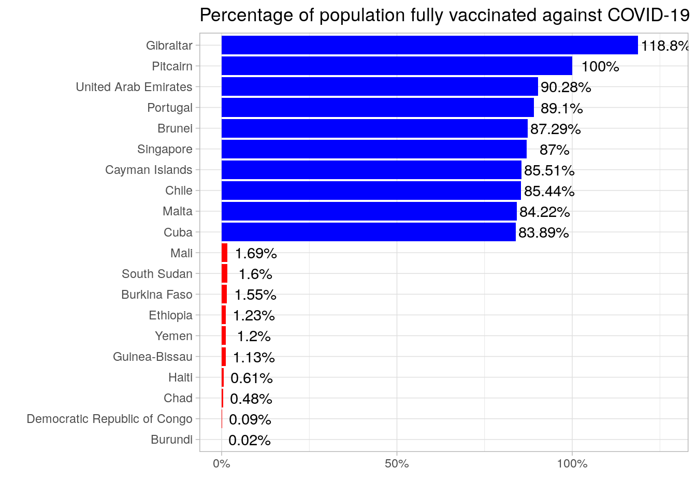

Chapter 4 Our World in Data COVID
4.1 Importing data
In this Chapter, we’ll turn to the COVID dataset from the Our World in Data project. It contains a complete set of variables related to COVID for a large number of countries. We can download it directly from the project’s Github:
library(tidyverse)
data_url <- 'https://raw.githubusercontent.com/owid/covid-19-data/master/public/data/owid-covid-data.csv'
covid_data <- readr::read_csv(data_url)4.2 Preparing the data
Suppose we’re interested in producing a rank with the ten’s most and least fully vaccinated countries in the world. At this time, fully vaccinated can be thought of as an individual who got two doses – we won’t consider booster doses. So our first task is to select the appropriate data on vaccinations. Using dplyr::glimpse() to check the variables in this dataset, we see three variables are of interest: location, date and people_fully_vaccinated_per_hundred.
Besides, it’s likely that several countries don’t have any data on vaccinations at all. This is the case of Vaticano, for example. We’d like to get rid of them, since they won’t make part of our ranking. What we need, then, is a condition which returns TRUE only if a given location has any non-NA value.
vacc_data <- covid_data %>%
dplyr::select(location,
date,
people_fully_vaccinated_per_hundred) %>%
dplyr::group_by(location) %>%
dplyr::filter(any(!is.na(people_fully_vaccinated_per_hundred))) %>%
dplyr::ungroup()Since we only need the last figures for each country, we can filter the most recent observations.
vacc_data_last <- vacc_data %>%
dplyr::group_by(location) %>%
dplyr::filter(date == max(date)) %>%
dplyr::ungroup()There’s a problem here! For many countries the last day is filled with a NA, even though data is available for previous days. See, for example, the Netherlands. We know that 74.6% of its population was vaccinated with two doses by 2021-12-12. But there’s no data for the following seven days.
vacc_data %>%
dplyr::filter(location == 'Netherlands') %>%
dplyr::slice_tail(n = 10)## # A tibble: 10 × 3
## location date people_fully_vaccinated_per_hundred
## <chr> <date> <dbl>
## 1 Netherlands 2021-12-11 NA
## 2 Netherlands 2021-12-12 74.6
## 3 Netherlands 2021-12-13 NA
## 4 Netherlands 2021-12-14 NA
## 5 Netherlands 2021-12-15 NA
## 6 Netherlands 2021-12-16 NA
## 7 Netherlands 2021-12-17 NA
## 8 Netherlands 2021-12-18 NA
## 9 Netherlands 2021-12-19 NA
## 10 Netherlands 2021-12-20 NAWe could think of different ways to retain the most recent non-NA observation in each country. But since the percentage of people vaccinated cannot decrease, it’s entirely fair to carry this observation forward and consider it the most recent figure. How can we do it? The fill() function from the tidyr package is designed to fill missing values with the previous (default) or next non-NA value, the main argument being the columns we want to fill.
At this point, I’d like to call your attention for another powerful tool available in dplyr 1.0.0 or higher. Remember that we used across to select variables using the pattern in their names? The selection helper where does something similar, but instead of a name pattern it selects the variables for which a given function returns TRUE. For example, we know that the variable we want to fill is numeric. So we can use this condition to prevent us from writing it. It won’t save us a lot of effort since we have only one variable with this condition here, but what if we had dozens?
vacc_data_last_nonNA <- vacc_data %>%
dplyr::group_by(location) %>%
dplyr::arrange(date) %>%
tidyr::fill(where(is.numeric)) %>%
dplyr::filter(date == max(date)) %>%
dplyr::ungroup()We can check what happened to Netherlands’ data for the last seven days. The last value from Dec 12th has been successfully carried forward up to Dec 19th. Now we’re ready to create our ranking and then plot it to get e better sense of the inequality in the vaccination race between countries.
Notice I use n() inside the dplyr::slice() function. It’s a great shortcut that can be used inside dplyr functions to avoid writing the number of rows in a data frame (or group). Also, note the use of forcats::fct_reorder. The forcats package contains a lot of useful functions to handle factors and fct_reorder is the one I use most. It reorder factor levels by sorting along another variable. In this case, as we are making a rank, it would be great if the locations were ordered by their position in the rank!
vacc_rank <- vacc_data_last_nonNA %>%
dplyr::mutate(rank = dplyr::dense_rank(desc(people_fully_vaccinated_per_hundred))) %>%
dplyr::arrange(rank) %>%
dplyr::slice(c(1:10, n():(n()-9)))
vacc_rank %>%
dplyr::mutate(rank_color = if_else(rank <= 10, 'good', 'bad')) %>%
ggplot(aes(x = forcats::fct_reorder(location, desc(rank)),
y = people_fully_vaccinated_per_hundred)) +
geom_col(aes(fill = rank_color)) +
scale_fill_manual(values = c('red', 'blue')) +
scale_y_continuous(labels = function(x) glue::glue('{x}%')) +
geom_text(aes(label = glue::glue('{people_fully_vaccinated_per_hundred}%')),
nudge_y = 8) +
theme_light() +
theme(legend.position = 'none') +
coord_flip() +
labs(title = 'Percentage of population fully vaccinated against COVID-19',
x = '', y = '')